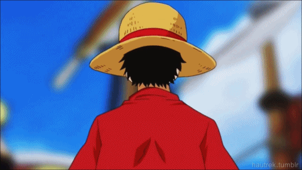
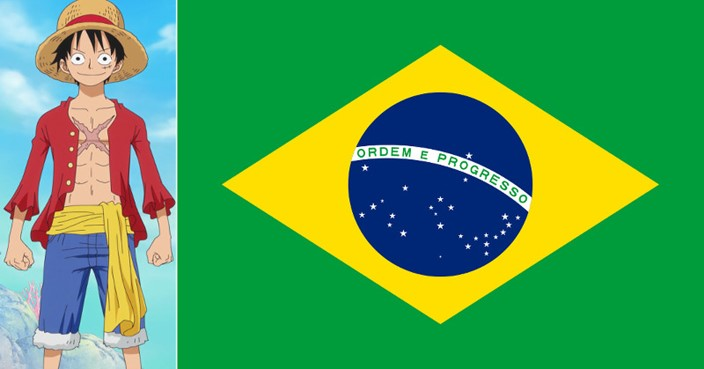
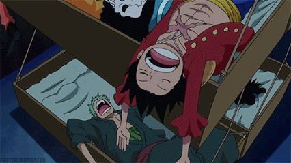
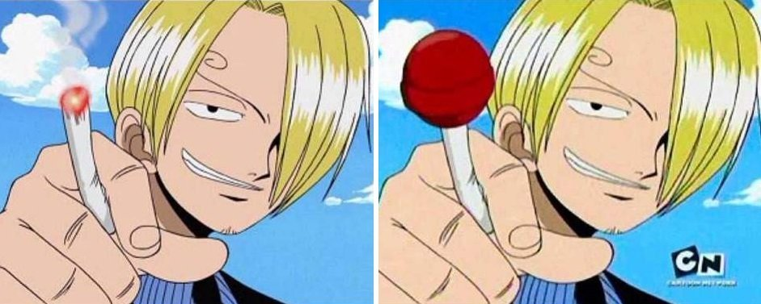
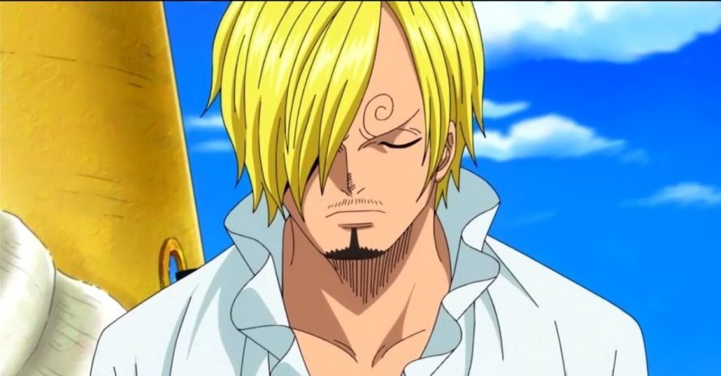
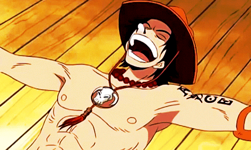
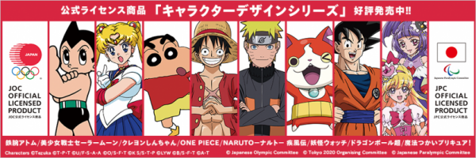
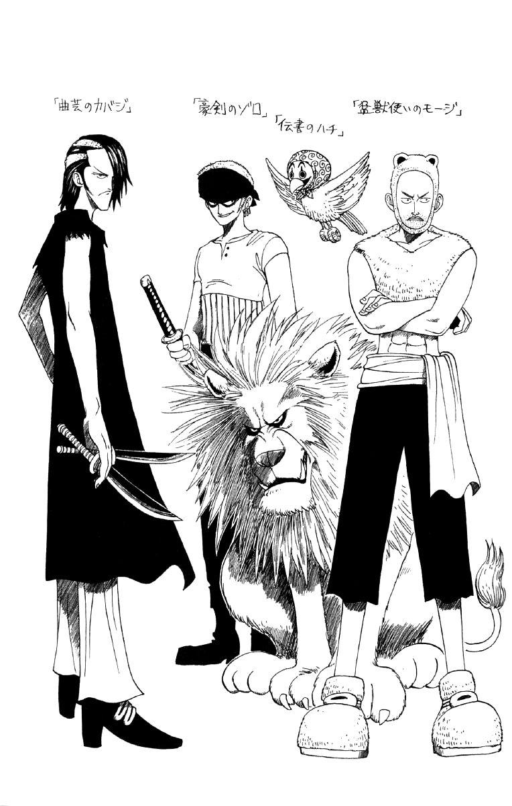

One Piece história
Historia
A série centra-se em Monkey D. Luffy, um jovem que, inspirado por seu ídolo de infância e poderoso pirata Shanks, "o Ruivo", sai em uma jornada do mar East Blue para encontrar o famoso tesouro One Piece e proclamar-se o Rei dos Piratas. Em um esforço para organizar sua própria tripulação, os Piratas do Chapéu de Palha (麦わら海賊団, Mugiwara Kaizoku-dan), Luffy salva e faz amizade com um espadachim chamado Roronoa Zoro, que se torna seu braço direito na busca pelo One Piece. Eles estão acompanhados em sua jornada por Nami, uma navegadora e ladra; Usopp, um atirador e um mentiroso; e Vinsmoke Sanji, um chef de cozinha mulherengo. Eles adquirem um navio chamado Going Merry (ゴーイング・メリー号, Gōingu Merī-gō) e se envolvem em confrontos com famosos piratas do East Blue. Conforme Luffy e sua tripulação partem para novas aventuras, surgem novos membros na tripulação, como Tony Tony Chopper, um médico e uma rena antropomórfica; Nico Robin, uma arqueóloga e ex-assassina; Franky, um carpinteiro ciborgue; Brook, um esqueleto músico e espadachim; e Jimbei, um tritão homem-peixe e ex-membro dos Sete Corsários. Uma vez que o Going Merry fica seriamente danificado, os Piratas do Chapéu de Palha adquirem um novo navio chamado Thousand Sunny (サウザンドサニー号, Sauzando Sanī-gō). Juntos, eles encontram outros piratas, caçadores de recompensas, organizações criminosas, revolucionários, agentes secretos e soldados do corrupto Governo Mundial, e vários outros amigos e inimigos, enquanto navegam nos mares em busca de seus sonhos.
Curiosidade
Parece que demorou um pouco mais!
O autor da obra, Eiichiro Oda, começou o mangá em 1997 e tinha planos de acabar a história de One Piece em 2002, e até possui o final definido, mas surgiram outros personagens e histórias e ficou inviável por um fim em 5 anos, até chegarmos a 21 anos da obra.br

Luffy Brasileiro!
Se One Piece acontecesse no mundo real, o protagonista da obra, Luffy, seria brasileiro. Zoro seria do Japão, Nami da Suécia, Usopp da África, Sanji da França, Chopper do Canadá, Robin da Rússia, Franky dos EUA e Brook da Austria.
Oda preguiçoso!
Oda revelou numa entrevista no One Piece Blue: Grand Data File, que se tornou um mangaká porque não queria ter um “trabalho de verdade”. Mas para Oda, ser um mangaká foi sua única escolha na vida. E criou a Wanted!, onde ganhou vários prêmios e levou o segundo lugar no Prêmio Tezuka e assim conquistando um emprego na Weekly Shonen Jump.
Censuras no Brasil!
Quando o anime passou no Brasil pelos canais Cartoon Network e SBT, a animação sofreu com algumas censuras pela 4Kids, uma delas foi o cigarro do Sanji que se transformou em pirulito na versão censurada.
Naruto ou melhor Sanji o cozinheiro!
A princípio Sanji iria se chamar Naruto, sim, Naruto! Mas na época Kishimoto, autor do mangá de Naruto e seu “rival”, fez o lançamento do mangá e Oda desistiu do nome, e assim, Naruto virou Sanji, que vem de 3ji (3時), três horas, por causa do lanche das 3.
Portgas D.Ace!
Portgas D. Ace, recebeu o sobrenome de Bartolomeu il Portugees, homem que criou o código pirata, que serviu de regra de conduta dos piratas na era de ouro.
Luffy embaixador!
Luffy foi um dos embaixadores dos Jogos Olímpicos no Japão em 2020. Juntamente com Astro Boy, Sailor Moon, Shin-chan, Naruto, Jibanyan (Yokai Watch), Goku (Dragon Ball) e a dupla Cure Miracle e Cure Magical (Maho Girls Precure!)
Zoro em outro bando!
Originalmente Zoro seria braço direito de Buggy, mas Oda desistiu da ideia e o colocou no bando Chapéu de Palha. O sobrenome Roronoa, deriva do nome do pirata francês, François l’Ollonais.
